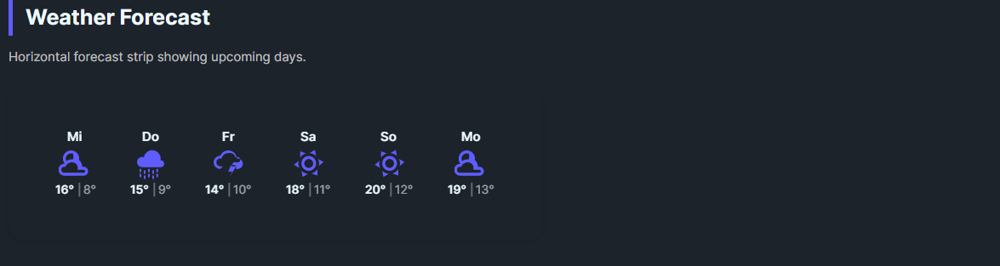

DaisyWeatherForecast is an ItemsControl that renders a row of forecast cards. Each card shows the day name, an animated weather icon, and the temperature range. Ideal for showing 5-7 day forecasts.
| Property | Type | Default | Description |
|---|---|---|---|
ItemsSource |
IEnumerable |
- | Collection of ForecastDay items |
TemperatureUnit |
string |
"C" |
Temperature unit (C or F) |
ShowPrecipitation |
bool |
false |
Show precipitation chance |
Size |
DaisySize |
Medium |
Control size (ExtraSmall, Small, Medium, Large, ExtraLarge) |
AutoFitItems |
bool |
true |
Auto-calculate item widths to fit container (recommended) |
Bind a collection of ForecastDay objects to the ItemsSource:
public class ForecastDay
{
public DateTime Date { get; set; }
public WeatherCondition Condition { get; set; }
public double HighTemperature { get; set; }
public double LowTemperature { get; set; }
public int PrecipitationChance { get; set; } // 0-100
}<!-- Basic forecast strip -->
<controls:DaisyWeatherForecast
ItemsSource="{Binding WeekForecast}"
TemperatureUnit="C" />
<!-- Fahrenheit with precipitation -->
<controls:DaisyWeatherForecast
ItemsSource="{Binding Forecast}"
TemperatureUnit="F"
ShowPrecipitation="True" />
<!-- Static example data -->
<controls:DaisyWeatherForecast TemperatureUnit="C">
<controls:DaisyWeatherForecast.ItemsSource>
<x:Array Type="{x:Type models:ForecastDay}">
<models:ForecastDay Date="2025-12-08" Condition="Sunny" HighTemperature="22" LowTemperature="14" />
<models:ForecastDay Date="2025-12-09" Condition="PartlyCloudy" HighTemperature="20" LowTemperature="12" />
<models:ForecastDay Date="2025-12-10" Condition="Rain" HighTemperature="18" LowTemperature="11" />
</x:Array>
</controls:DaisyWeatherForecast.ItemsSource>
</controls:DaisyWeatherForecast>Each forecast item displays:
1. Day name (Mon, Tue, Wed, etc.) - derived from Date
2. Animated weather icon - based on Condition
3. Temperature range - High°/Low° format
Items are arranged horizontally with equal spacing.
DaisyBaseContentBrushDaisyPrimaryBrushDaisyBaseContentBrush with opacity